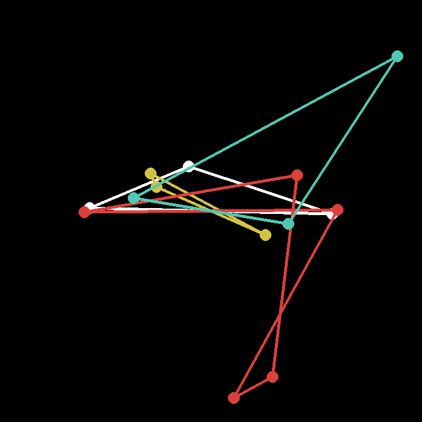
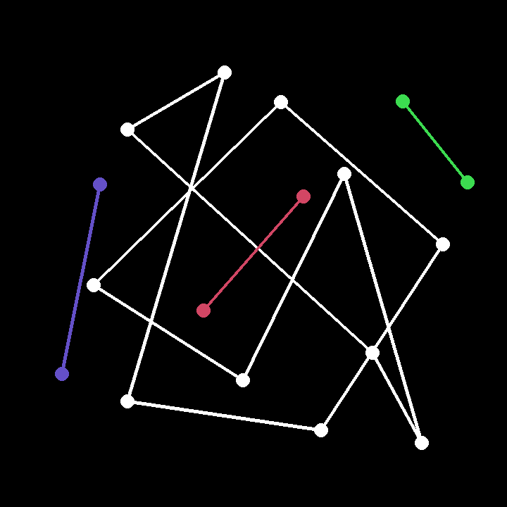
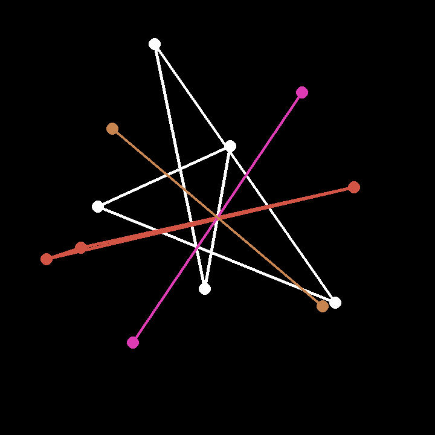
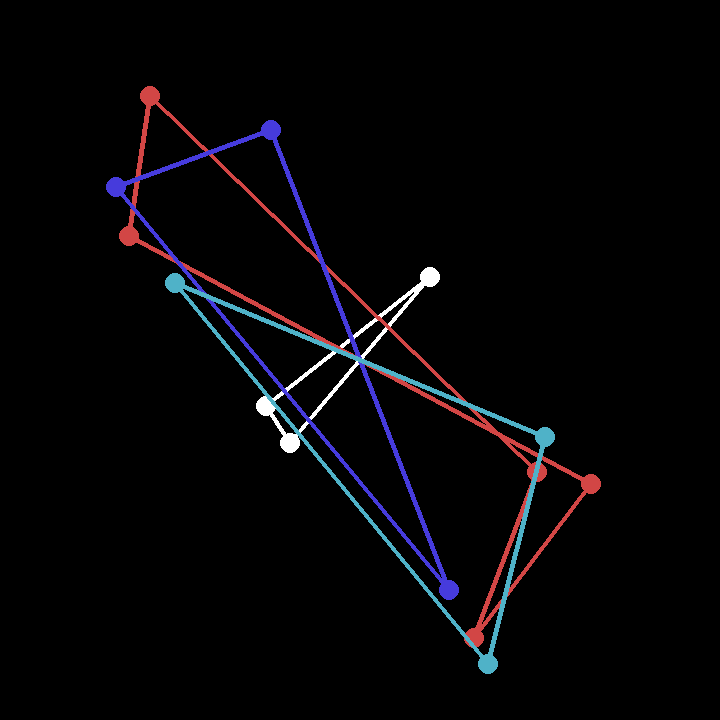
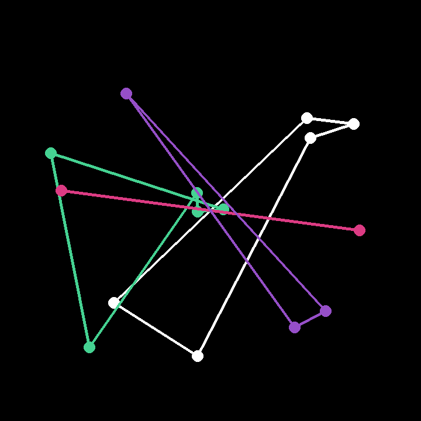
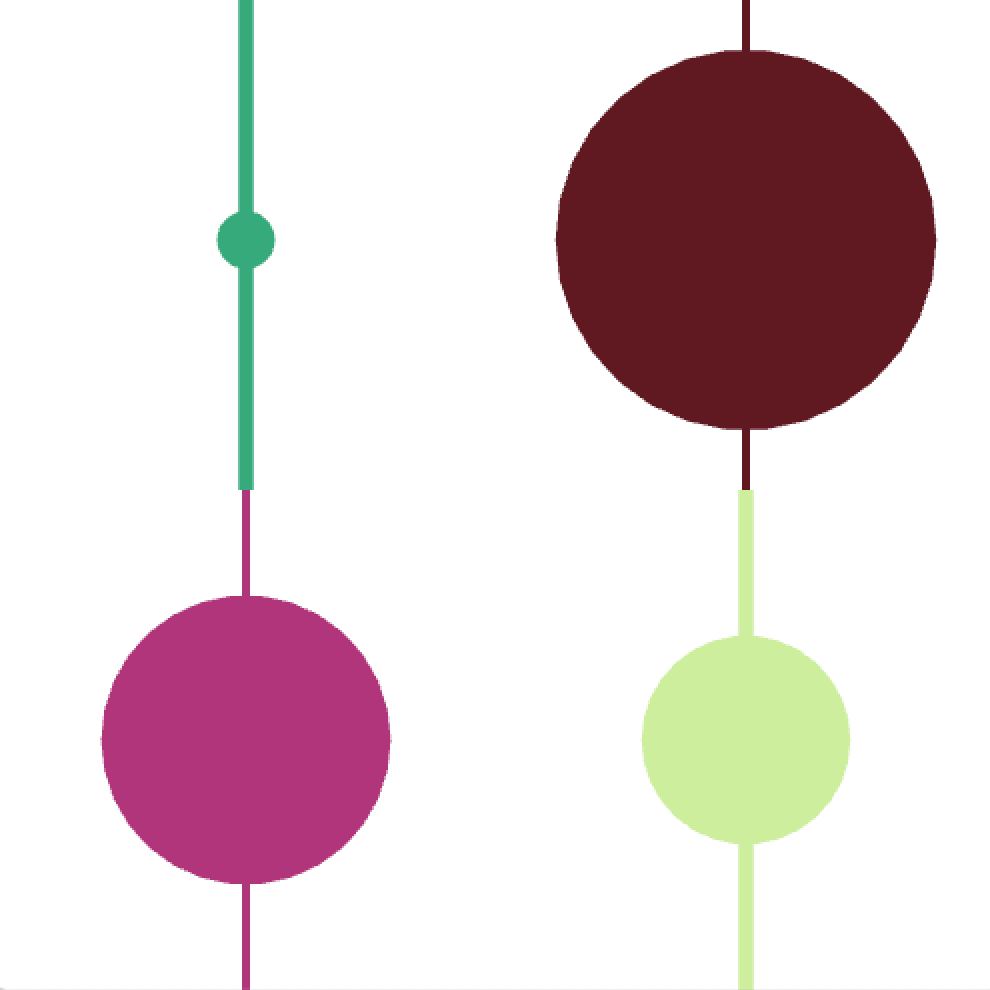

Click on the nodes to discover more
At the center of the audio engine is a phase modulation algorithm. This method was chosen as it allows for a variety of timbres to be created with only a few parameter changes. Having such an adaptable system meant that aesthetically pleasing presets could be easily made. While natural sounds can be made using phase modulation, the digital timbres created support the aesthetic of Constellations. With the user given the ability to mutate timbres, they have a vast amount of sounds in their palms.
At first glance the star maps created could mistakenly be seen as just a novel interface for the user. But they also have a dual purpose. The maps generated tell a story of the exploration undertaken by the user. It becomes a graphical score and, like any musical score, can be read to understand the music on a deeper level.
These star maps were generated while creating musical examples for this project
   The name, sounds, and visuals of Constellations are all designed to inspire exploration and play. The star maps the user creates are there to support all of this. These constellations gives the user an immediate response to their actions. They are also a visual history of the current session as each one evolves as the user adapts the sequences. The abilty to change position and control the colour of the different layers also adds personalisation to that specific composition. All the visuals are there to create a sense of engagement and ownership with the user, encouraging them to work through their session to create a compelling composition.
Constellations is an electronic digital instrument, designed to inspire exploration and creativity. The instrument takes away many typical controls, encouraging the user to delve deep into the elements they can control.
This work was heavily inspired by Norbert Herber's idea of "The Composition Instrument". In his article Herbert sets out his criteria for what a composition instrument is. He explains how this type of instrument should be a balance between composition and improvisation, strategy and chance. The instrument can also be played or performed and can be used in a multitude of situations. Exploration also seems to be a common theme in the examples Herbert presents. The systems all seem to encourage play and interaction through discovery. Because of this discovery and play became key parts in Constellations design ethos.
Another field of research that heavily inspired this piece was genetic algorithms, specifically their use in navigating parameter spaces on digital instruments.
Constellations does not have a conventional UI. Please study the instructions to fully understand the potential of this instrument.
Constellation mode is when no node is selected.
Node mode is when a node is selected.
Each of the encoders can be pressed to access more controls
Encoder 1
Encoder 2
Before Constellations was realised this project began life as an experiment to explore sound in novel ways. The original concept used genetic algorithms to change the sound engine parameters. The user just had to select which sounds they liked and new, similar sounds would be created.
From a computational point of view, this was a very interesting way to navigate parameter spaces. Unfortunately it did not feel very responsive or engaging for the user. Non-specialists may also feel detached from the instrument as they are not aware of the underlying algorithms. For these reasons the earlier concepts were dropped.
Not everything was lost from the original concept as a number of ideas were bought over. The technique of using genetic sequences to generate audio parameters was a key concept that was implemented in the final version of Constellations. Also other design elements such as mutating and making it a sequencer were carried over. Despite Constellations looking very different from its ancestors, it needed that evolution to grow into what it is today.
A raspberry pi 3A+ is the brains of the operation. All of the computing comes from this device, which means Constellations is a completely portable instrument. This was a key design choice as the user is now unshackled from their computer. It also means Constellations can be integrated into any DAW and DAW-less setup.
The touch screen is a Pimoroni Hyperpixel. It is a capacitive 60Hz display and is ideal for the synthesiser. As the user will be interacting with the instrument for a long time, it is important that the screen is has a pleasant viewing experience.
The rest of the controls given to the user are all being routed through an IO expander. While the Hyperpixel is a brilliant display it does take up all of the Pi's GPIO pins. For this reason I had to use an IO expander so I could run everything on the Pi.
Case designed by Gero
A number of languages and frameworks have been used to create the software of Constellations. The heart of the project is an openFrameworks (C++) application. openFrameworks generates all of the graphics displayed to the user, and handles to OSC routing so the controls and audio engine work with the main app.
The audio engine has been built using PureData, a node based scripting language. The engine is built using phase modulation techniques. This technique enables the synth to create a multitude of different timbres.
Python has been used to programme the hardware controls. All data is being sent using OSC which is ideal for cross language/app data transfers.
Languages: C++ (openFrameworks), PureData, Python